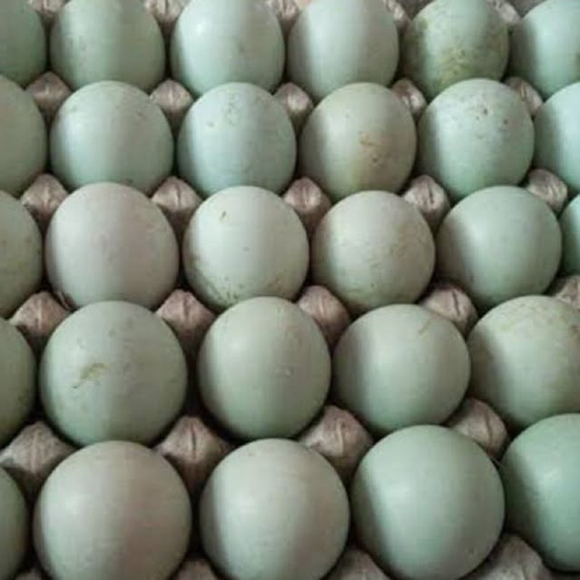
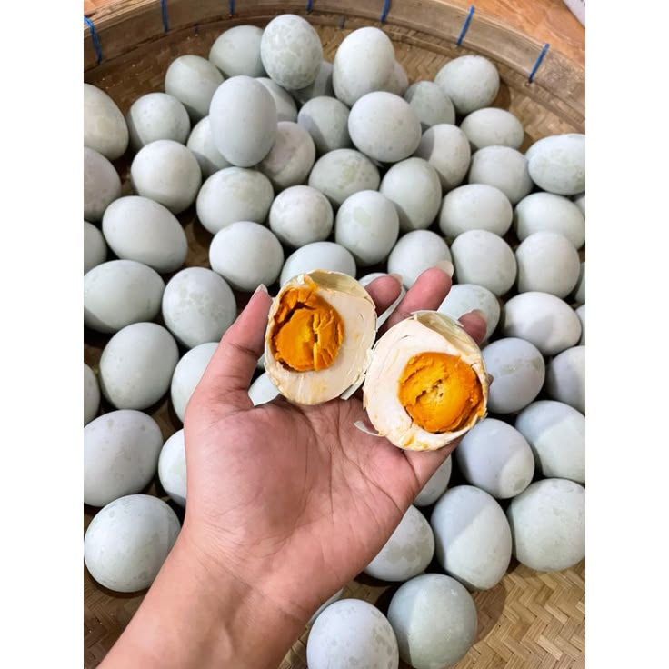
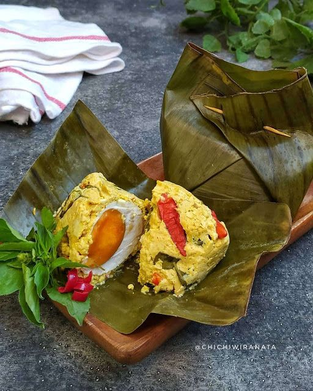
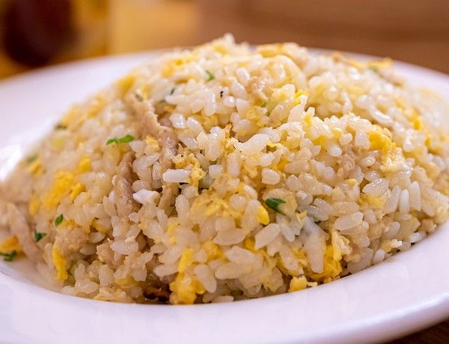

Dihasilkan dari bebek sehat dengan pakan alami, menghasilkan telur bercangkang biru tebal dengan kuning telur masir berminyak yang gurih untuk berbagai sajian keluarga.
Pakan alami kaya karoten
Kuning telur lebih pekat & masir
Rasa asin gurih pas di lidah
Matang sempurna & tahan lama


Telur bebek dengan pigmen cangkang biru alami (biliverdin) memiliki struktur pori yang merata dan cangkang yang kokoh, sehingga proses penyerapan garam berlangsung stabil tanpa mudah retak.
Klik tombol Lihat Resep di setiap kartu untuk melihat takaran bahan dan langkah memasaknya.

Sajian kukus tradisional berbalut daun pisang dengan kelapa parut muda dan bumbu rempah harum.
Udang goreng tepung renyah berlumur saus kuning telur asin creamy dengan aroma daun kari.

Nasi goreng gurih keemasan yang diorak-arik bersama kuning telur asin melimpah dan irisan cabai.
Kombinasi modern spaghetti dengan balutan saus telur asin yang kental, gurih, dan creamy.
Pilih jenis telur yang diinginkan, atur jumlah di keranjang sebelah kanan, lalu kirim pesanan langsung ke WhatsApp penjual.
Ukuran Super Besar (kuning telur besar & masir tinggi)
Ukuran Sedang (standar lauk harian & olahan kuliner)
Ukuran Paling Kecil (ekonomis untuk sajian rumahan)
Telur bebek biru segar mentah (untuk martabak, jamu, atau diasinkan sendiri)
Atur jumlah butir dan isi data penerima untuk dikirim ke WhatsApp penjual.
Rp 5.000 / butir
Rp 4.000 / butir
Rp 3.000 / butir
Rp 2.800 / butir
Catat tanggal mulai perendaman dan jadwal angkat telur asin panen, sekaligus pantau langsung kondisi wadah pengasinan secara real-time di Digital Twin 3D.
Isi detail batch rendaman baru untuk menandai tanggal mulai dan tanggal angkat panen di kalender.
Pantau visualisasi 3D wadah perendaman beserta pembacaan sensor IoT (Slave 1 & Slave 2) secara langsung: